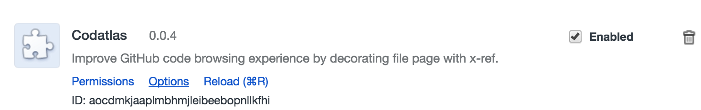

Codatlas New User Guide¶
This chapter is intended to go through the basics of how to use Codatlas. For the rest of the chapter, $HostName refers to the public DNS address that has Codatlas installed. For example if you using AWS $HostName could be http://ec2-52-35-135-191.us-west-2.compute.amazonaws.com
Create an Account¶
You can create an account at
http://$HostName/signup
The account can either be created with an email and a password, or directly by login with Github account if the admin has setup Github integration.
Note that the first account that is created will be granted admin access.
Add Repository¶
If you are using Github integration with Codatlas and logged in with your Github account, simply go to
http://$HostName/myprojects
Click on Authorize Github Public/Private Repo Access buttons to grant Codatlas access to the public/private repos under your Github account respectively, after which all your repos should be listed under Repositories. Click on the Import this repo switch for the ones you want to import. This will kick-off the code analysis process.
If you are not using Github integration, log in with the account with admin access, and go to:
http://$HostName/admin/projects
Put the git clone address (e.g. https://github.com/apache/hadoop.git) into Enter url here text box and click on “Submit”. You will see the repo showing up in All projects list.
Use Github Plugin¶
Install and Config Plugin¶
Codatlas also comes with a Github Chrome plugin allows you to add cross-reference to Github pages.
Before the installation, make sure you can visit
http://$HostName and login with Github credential.
To use it, first download Codatlas plugin from:
https://chrome.google.com/webstore/detail/codatlas/iaaaofjkoijmkiggkfjepnedghgfllkp
Codatlas should show up in your extension list, as showing below:
check Enabled check box and click on Options page, this should bring up an option window for you to put in the server address. put in $HostName in host box and leave protocal to be http and port to be empty. Click on Submit and wait until the following success message to be shown:
You have connected to the server and logged in! Enjoy code browsing!
If you see some message other success message, here are possible situations:
If you see Error connecting to server!, this means that the plugin can not connect to the server. This can be either due to wrong server address or that you have not made exception for SSL connection to the server.
If you see You have not logged in with Codatlas and will not have access to your private repos, this means you can connect to Codatlas server but you are not logged in, which will limit your access to private repos.
Obtain Build Log from Jenkins¶
Internally Codatlas uses Jenkins to build your project and relies on the build process to perform code analysis. If you see the project does not have any code refernce, chances are there are some issue with the build process. In order to diagnose the issue, you can open a web browser and open Jenkins to obtain the log:
http://$HostName:8080
Locate the build job on right hand side from Build History list, the name of the job will contain the name of the project

Click the latest number as shown in the graph. And then click ‘View as plain text’ to get the log file.